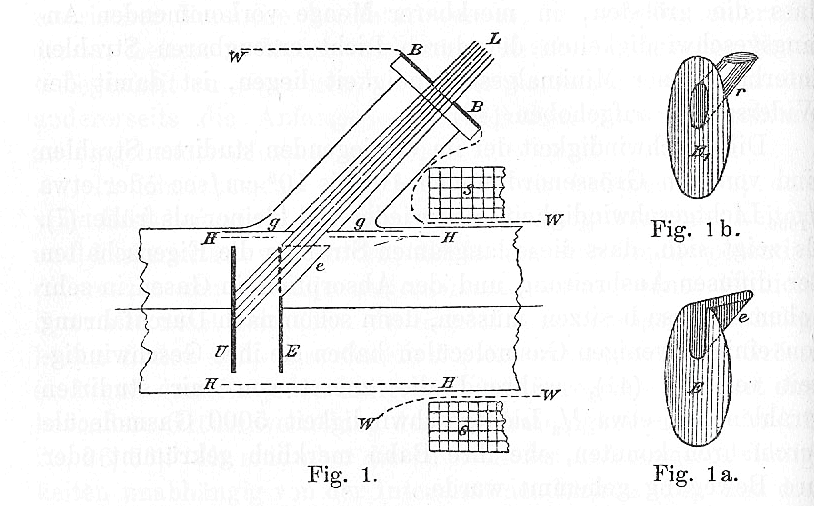
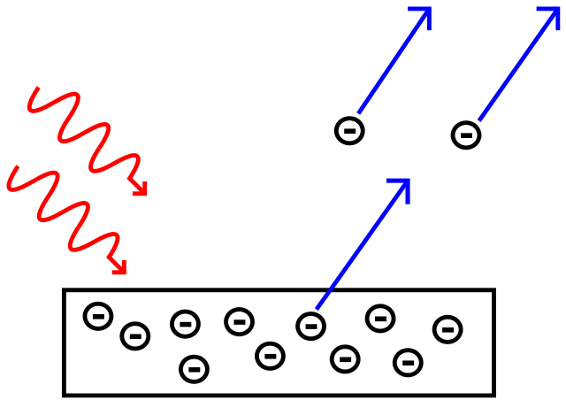
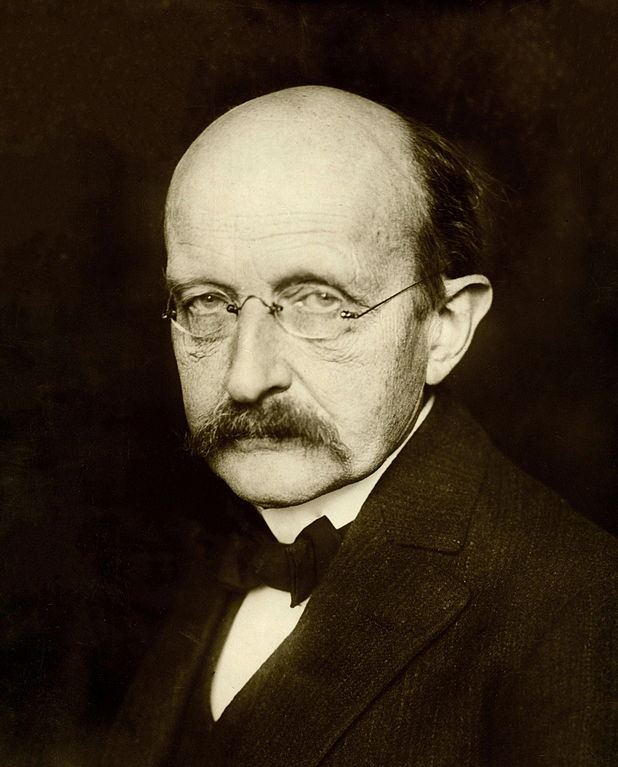

Sememangnya nama Albert Einstein tidak asing lagi dengan persamaan jisim-tenaga (E=mc2) ataupun dengan teori relativiti beliau. Disebabkan ini, ramai menyangkakan teori yang popular inilah penyebab Albert Einstein memenangi Anugerah Nobel. Sangkaan ini adalah tidak tepat kerana menurut Nobelprize.org, Anugerah Nobel dalam Fizik pada tahun 1921 diberikan kepada saintis ini “kerana hasil kerjanya dalam Fizik Teori, terutamanya untuk penemuan terhadap hukum untuk Kesan Fotoelektrik”.
Kesan Fotoelektrik
Sekarang muncul pula persoalan; “Apa itu Kesan Fotoeletrik?” dan apa pula kepentingannya?
Kesan Fotoelektrik ialah apabila kita memancarkan cahaya untuk menerujakan elektron sehingga melompat keluar daripada orbitnya. Kesan ini mula diperhatikan oleh Phillip Lenard pada tahun 1902 dan diterbitkan dalam Annalen der Physik (Jurnal Bahasa Jerman). Maka apa kaitannya dengan Einstein?

Saintis pada zaman itu mengandaikan bahawa
- Lagi kuat keamatan [intensity] cahaya, lagi laju ‘loncatan’ elektron,
- Kalau cahaya tak cukup kuat untuk berikan tenaga yang sepatutnya, akan ambil masa yang lebih lama sedikit untuk membekalkan tenaga yang cukup untuk elektron melompat, dan
- Cahaya jenis apa pun (yang berlainan frekuensi) akan membekalkan tenaga yang sama kepada elektron.
Ini adalah berdasarkan model cahaya sebagai gelombang yang membekalkan tenaga secara berterusan tanpa henti. Namun, malangnya (1) tidak ada elektron yang bergerak lebih laju walaupun daripada cahaya yang berlainan keamatan, (2) semua elektron melompat sebaik sahaja terkena cahaya walaupun daripada cahaya yang berlainan keamatan, dan (3) elektron akan melompat hanya apabila frekuensi cahaya itu lebih besar daripada satu nilai tertentu.

Gambaran Kesan Fotoelektrik. (Imej milik Wolfmankurd, lesen CC BY SA 3.0)
{kind=link}
Maka apa yang sebenarnya berlaku? Di sinilah Einstein mencelah. Einstein memberikan penjelasan kenapa ia berlaku dengan menggunakan model cahaya sebagai bebola tenaga (ataupun foton). Berbeza dengan model gelombang, model foton membekalkan tenaga secara paket bukannya berterusan. Macam analogy perbezaan air yang mengalir (model gelombang) dan air yang dicurahkan daripada baldi (model foton).
Hal ini menjelaskan kenapa kebolehan elektron melompat bergantung frekuensi kerana bekalan tenaga cahaya adalah bergantung kepada frekuensi juga. Logiklah! Getaran yang lebih bertenaga akan menghasilkan frekuensi yang lebih tinggi.

Max Planck. (Imej Domain Awam)
{kind=link}
Sebenarnya, Max Planck yang menjumpai bahawa cahaya itu dibawa dalam paket-paket tenaga dalam satu kajiannya. Einstein menggunakan dapatan Planck untuk menjelaskan fenomena fotoelektrik dan beberapa fenomena lain. Kemudian, Robert Millikan membuktikan idea ini dengan mencari nilai Planck menggunakan kesan fotoelektrik. Gandingan yang hebat antara saintis!
Kesimpulan
Gandingan hebat empat saintis ini telah mengubah ilmu manusia tentang cahaya. Dulu manusia percaya yang cahaya hanyalah gelombang semata-mata namun sekarang cahaya mempunyai ciri-ciri gelombang dan zarah dalam masa yang sama! Inilah yang dinamakan Kembaran Zarah-Gelombang [Wave-Particle Duality] dan ia membuka pintu untuk mengkaji zarah-zarah kecil dalam bidang Fizik Kuantum.
Nota kaki
Semua ahli fizik yang disebut dalam artikel ini adalah pemenang Anugerah Nobel pada tahun yang berbeza-beza iaitu Phillip Lenard (1905), Max Planck (1918), Albert Einstein (1921) dan Robert Millikan (1923)! Lebih menarik lagi, semuanya adalah sebab sumbangan masing-masing yang dinyatakan dalam artikel ini! Wow berkali-kali wow!